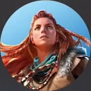
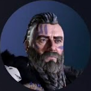
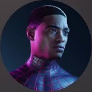
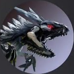

₩
Media Gallery
Characters
Must Play Now
Reviews
4.5
게임을 플레이하고 당신의 후기를 남겨주세요.
0%
5점 평가
PlayStation 유저 리뷰
0k +
플레이어 수
전세계 게임 유저 수
0k +
평가 수
전체 리뷰 개수
0 +
어워드
Game of the Year
Marcus_Chen
2025.12.15
리마스터가 되면서 그래픽이 압도적으로 좋아졌습니다. 또한 로딩 시간도 단축되어 쾌적한 플레이가 가능합니다. 예전에 다크소울이나 블러드본의 경우 로딩에 한 세월이 걸리거나, 몹이 많이 나오는 곳에 가면 버벅되는 현상이 있었는데 전혀 이런 부분이 없이 스무한 게임 진행이 가능합니다.
Sarah_Williams
2025.12.08
이전 시리즈에서도 느꼈었지만, 손맛 하나는 일품인 게임이라 생각합니다. 듀얼센스 진동을 사용하는 게임 중에서 이 정도의 손맛이 느껴지는 게임은 저는 본 적이 없었습니다. 공격 강도, 방어의 둔탁한 느낌 등 무엇 하나 빠질 게 없습니다. 아슬아슬하게 적의 공격을 회피한 후 스태미너를 모두 태워서 연타를 날릴 때 쾌감은 패드를 놓지 못하게 만드는 가장 중요한 중독적인 요소인 것 같습니다.

James_Lodriguez
2025.11.21
어떤 스테이지를 골라서 진행하느냐에 따라 다양한 환경에서 플레이가 가능합니다. 험난한 늪지대, 감옥이 줄줄이 늘어선 으슥한 장소, 사막과 같은 황량함이 느껴지는 광산 등 이후 나온 후속작 시리즈에 비해선 여러 환경을 느낄 수 있다는 것이 장점인 것 같았습니다.

Ethan_Walker
2025.11.15
그래픽과 사운드의 완성도가 높아 몰입감이 뛰어났고, 조작도 직관적이라 처음부터 부담 없이 즐길 수 있습니다. 스토리 전개는 차분하지만 긴장감을 유지해 주며, 플레이할수록 세계관에 자연스럽게 빠져드는 게 이 시리즈의 매력인 거 같습니다. 처음 해보시는 거라면 전 시리즈 다 해보시는 걸 추천합니다.

Lucas_Bennett
2025.11.02
전투와 탐험의 균형이 잘 잡혀 있어 지루할 틈이 없었다. 디테일한 연출과 세심한 UI 덕분에 플레이 경험이 매끄럽고, 짧은 플레이 시간에도 확실한 만족감을 느낄 수 있는 게임이다. 마지막 엔딩 때문에 이 게임을 3번은 더 플레이해볼 거 같다.

Oliver_Grant
2025.10.23
전체적인 완성도와 몰입도가 높아서 한 번 시작하면 쉽게 멈출 수 없었다. 캐릭터 움직임과 환경 표현이 자연스럽고, 반복 플레이에서도 새롭게 느껴지는 요소들이 많아 꾸준히 즐기기 좋았다. 이전, 다음 시리즈들과 이어지는 이스터 에그도 플레이 중 소소한 재미를 준다.